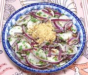

|
Daikon SaladBurma - Monlar Oo Thoke | ||||
| Serves: Effort: Sched: DoAhead: |
5 salad ** 35 min Yes |
A delightful salad, perfect to accompany heavy or spicy dishes. I apply the Peanuts as a garnish so they can be left off in case of peanut allergy. This salad can be made ahead and will benefit by some rest in the fridge. | |||
|
1 ----- 1 1/2 3 ----- 5 2 1 1 1 ----- 2 |
# --- t T T --- oz T T T t --- T |
Daikon (1) -- Marinade Salt Sugar Rice Vinegar -- Flavorings Onion Cilantro Toasted Sesame (2) Fried Shallots(3) Fish Sauce (4) -- Garnish Roasted Peanuts (5) |
Do Ahead
|